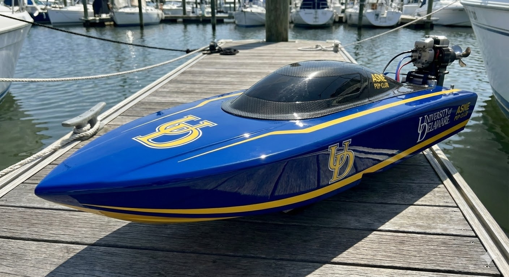
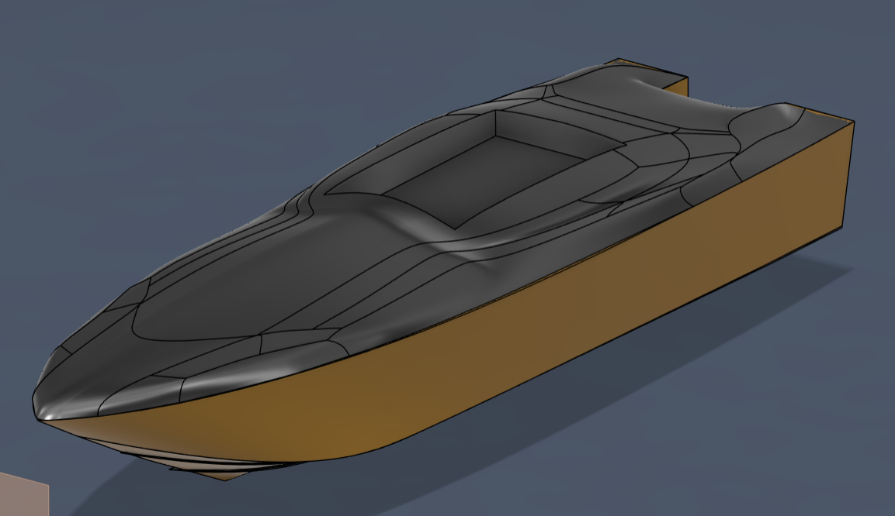

From hull simulation to autonomous navigation — follow our engineering process and build updates.


Our 2026 vessel is a full ground-up build — a custom Deep-V monohull designed in Rhino3D + Orca3D, simulated for drag and hydrodynamic performance, and being constructed from scratch. Every subsystem — propulsion, battery management, autonomous navigation, hull structure — is being redesigned and upgraded from the 2025 platform.
// Hull Specifications| Hull Type | Deep-V Monohull |
| Design Software | Rhino3D + Orca3D |
| Analysis | Hull drag simulation, propeller dimensioning |
| Construction | From scratch (2025 was donated hull) |
| Motor | 8,000W brushless underwater outboard |
| Max RPM | 13,000 RPM |
| System Voltage | 53V (2× 26.5V in series) |
| Drive Battery | 2× 26.5V 30Ah LiPo packs |
| Aux Battery | 7Ah — water pumps & AutoNav controller |
| ESC | ZTW (sponsored) |
| Motor Brand | Flipsky (sponsored) |
| Schematics | Full circuit diagram designed in KiCad |
| Navigation | GPS-based waypoint planning |
| Controller | Mission Planner (custom param files) |
| Steering | Custom linear actuator turning mechanism |
| Outboard Mount | Swivel-type retractable outboard unit |
| Mech. Design | SolidWorks + Fusion 360 |
8kW Flipsky underwater outboard motor running at 53V system voltage with a custom swivel-retractable mount for easy deployment and retrieval.
Dual 26.5V 30Ah LiPo packs in series for drive power. Dedicated 7Ah auxiliary pack powering water cooling pumps and the autopilot controller independently.
GPS-based waypoint navigation using Mission Planner with custom parameter files. Linear actuator steering system designed and fabricated in-house.
Ground-up Deep-V monohull designed in Rhino3D and Orca3D. Full hydrodynamic drag analysis performed to optimize hull form and propeller selection.
Complete circuit schematic designed from scratch in KiCad. Custom PCB-level planning for power distribution, signal routing, and component protection.
Outboard propulsion unit modeled in SolidWorks and Fusion 360. Custom linear actuator mechanism engineered for reliable, precise steering control.
Our inaugural competition boat — built on a donated hull and fully transformed by the team into a competitive racing vessel. As a first-year team, we achieved a Top-10 finish in speed at the ASNE PEP 2025 national competition.
The 2025 boat was a proving ground — demonstrating what our team could do with limited time and resources, and laying the foundation for the fully custom 2026 build.
View on ASNE Website →The team completed the CAD design of our custom outboard propulsion unit in SolidWorks and Fusion 360. The unit features a swivel-type mount for easy retraction, and integrates with our linear actuator steering mechanism. We're now moving into fabrication using the UDel MakerSpace's CNC and 3D printing capabilities.
Completed our first successful GPS-based waypoint navigation runs in Mission Planner. Built custom parameter files for motor control and waypoint tracking. The linear actuator steering mechanism is now responding correctly to autopilot commands, with fine-tuning of PID gains ongoing.
Ran full hydrodynamic drag simulations on our Deep-V hull form in Orca3D. Based on the drag data, we calculated optimal propeller diameter and pitch for our 8kW motor running at 53V. Results confirmed our hull design is on target for significantly improved performance over the 2025 vessel.
Represented the University of Delaware at the US Navy's 250th Anniversary Homecoming event. We showcased our 2025 vessel and presented our 2026 design roadmap to naval engineers, officers, and industry professionals. An incredible experience and a strong validation of our team's work.
Completed the full electrical system schematic in KiCad, covering power distribution from the dual-battery pack through the ESC, motor controller, and auxiliary systems. Includes waterproofing and thermal considerations learned from 2025 pool testing. Schematic is now being used to guide component procurement and wiring harness fabrication.
Hosted a technical session with Professor Michael DeLorme from Stevens Institute of Technology. Covered naval architecture fundamentals, hull form selection, and marine propulsion system design. The session directly informed our decision to build a Deep-V monohull for 2026 and our propeller selection methodology.